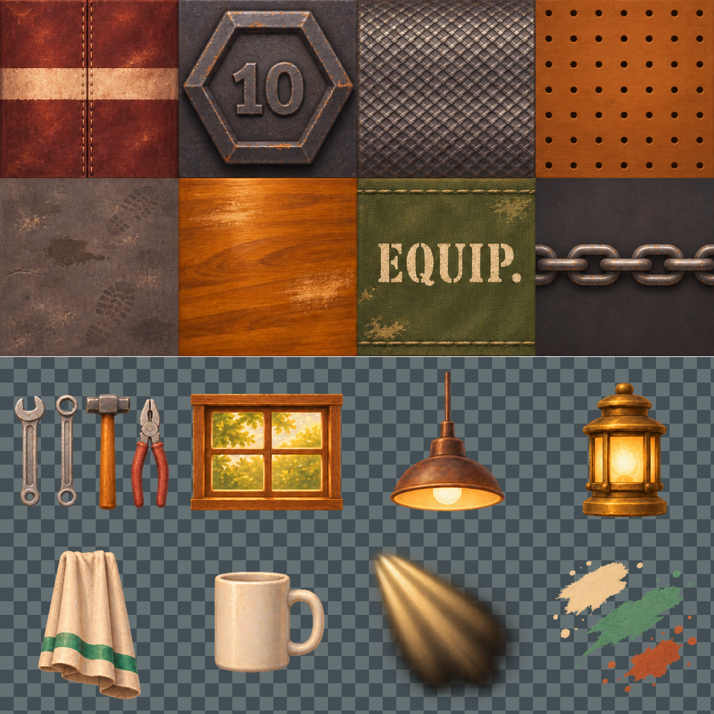
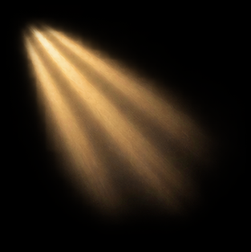

← Atlas da garagemDetalhes da garagem e fonte estêncil
16 células, materiais RGB, recortes RGBA, ferramentas separadas e fonte dinâmica.
Baixar complemento · Manifest · LEIA-ME

- saco pancadas costura
- anilha sextavada 10
- cabo serrilhado
- painel perfurado
- concreto oleo pegadas
- madeira wing chun
- lona equipamento
- corrente
- ferramentas
- janela interior
- lampada pendente
- lanterna bancada
- toalha listra jade
- caneca branca
- feixes luz
- respingos tinta
Feixes sobre preto
